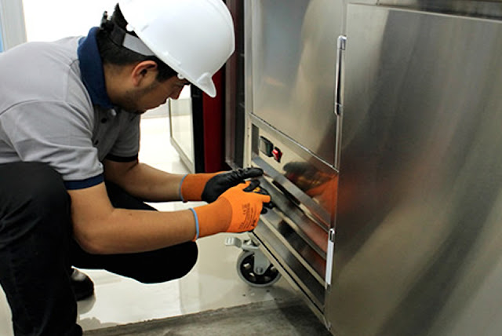

Servicios Especiales

Diseño y ensamblaje
Diseñamos, realizamos pruebas y entregamos productos funcionales a pedido del cliente
asesoramiento
Fuera de brindar un asesoramiento a la hora de entregar cada producto, ofrecemos un servicio especializado de asesoramiento, desde el diseño, ensamblaje, pruebas de calidad, instalacion y guias de uso

mantenimiento especializado
En caso de que su equipo se comiense a deteriorar y se vencio su garantia, ofrecemoa paquetes de mantenimiento
corte plasma
Cortes especializados con plasma